Falsos positivos no Wazuh
O que é um falso positivo e porque se reclassifica em vez de se apagar; um alerta real do Wazuh de testes, o pedido à IA anonimizado e a resposta real com as etiquetas repostas, a regra-filha, a validação e a aplicação ao gestor com cópia de segurança, reinício e confirmação pelo logtest; e o histórico das regras.
Um centro de operações que recebe mil alertas por dia, e em que novecentos são sempre os mesmos e inofensivos, deixa de olhar para os alertas. Nesta página vemos como se cala esse ruído no Wazuh, sem esconder o que importa.
O conceito
Um falso positivo é um alerta certo sobre uma coisa inofensiva. A regra fez o que devia: viu uma tentativa de entrar com um utilizador que não existe. O contexto é que a desmente: é o scanner interno, a testar contas, todos os dias.
A regra original não se apaga, porque apanha ataques verdadeiros. Cria-se uma regra-filha, que herda da mãe e que só se aplica àquele caso, com o nível baixo. O evento continua nos arquivos, para a auditoria, mas deixa de ser alerta. E quanto mais estreita, melhor: um endereço, uma conta, uma máquina, nunca a regra toda.
O que é um falso positivo
Um alerta certo sobre uma coisa inofensiva: a regra fez o que devia, o contexto é que a desmente.
Não se apaga a regra original: cria-se uma regra-filha, só para aquele caso.
A regra-filha herda da mãe (if_sid) e baixa o nível: o evento fica nos arquivos, mas deixa de ser alerta.
Quanto mais estreita, melhor: um endereço, um utilizador, uma máquina — nunca a regra toda.
Antes de abrir o ecrã
Antes de abrir o ecrã, três coisas. O alerta, e a razão por que se acha que é falso, de quem os analisa. A confirmação de que aquela origem é legítima, do responsável pelo sistema. E a aprovação do responsável de cibersegurança: uma regra de falso positivo é uma decisão de não ver, e tem dono.
A aplicação no gestor só a faz um administrador do SecVision, porque reinicia o Wazuh.
O que pedir a quem
Informação |
Quem a tem |
|---|---|
O alerta, em JSON, e porque se acha que é falso |
quem analisa os alertas |
A confirmação de que a origem é legítima (o scanner, o serviço) |
o responsável pelo sistema |
A aprovação para mexer nas regras do gestor |
o responsável de cibersegurança |
Aplicar no gestor |
um administrador do SecVision |
No Wazuh
Menu: Wazuh › Threat Hunting › Events
Tudo começa no Wazuh, no painel onde quem analisa os alertas trabalha. Em Threat Hunting, nos eventos, procura-se a regra 5710 numa máquina do ambiente de testes, a base de dados 003: alguém tenta entrar com uma conta que não existe, de dois em dois minutos, sempre do mesmo endereço.
Abre-se o alerta, e no separador JSON está o documento inteiro, tal como o Wazuh o guarda. O botão de copiar põe-no na área de transferência. É isto que se leva para o SecVision.
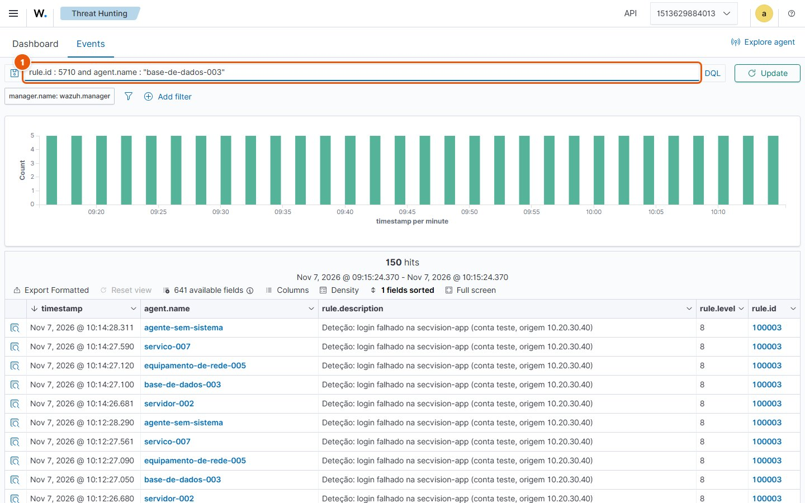
O ecrã em Wazuh › Threat Hunting › Events (1 de 3).
Escreva «rule.id : 5710 and agent.name : «base-de-dados-003»» no campo Start typing to search and filter the wazuh-discover-search-.
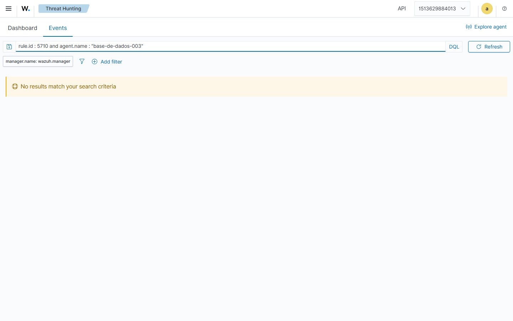
O ecrã em Wazuh › Threat Hunting › Events (2 de 3).
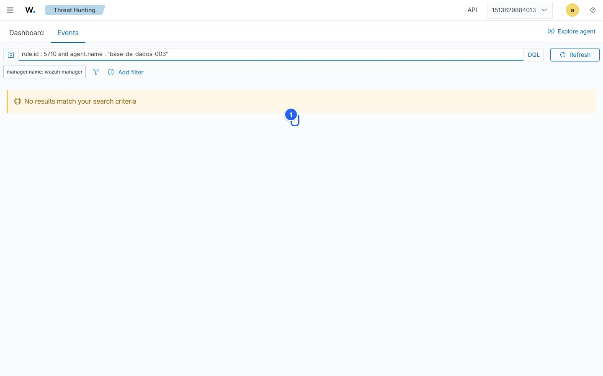
O ecrã em Wazuh › Threat Hunting › Events (3 de 3).
De 2 em 2 minutos, sempre o mesmo
O alerta
Menu: Proteger › SOC › Falsos Positivos
No SecVision, em Falsos Positivos, cola-se o alerta na primeira caixa. É o mesmo documento, sem mexer em nada.
O ecrã lê o alerta e mostra o essencial: a regra que disparou, a 5710, o nível, a máquina e a origem. E quantas vezes essa regra já disparou, contadas nos arquivos do Wazuh. Um número alto e sempre da mesma origem é o primeiro sinal de um falso positivo.
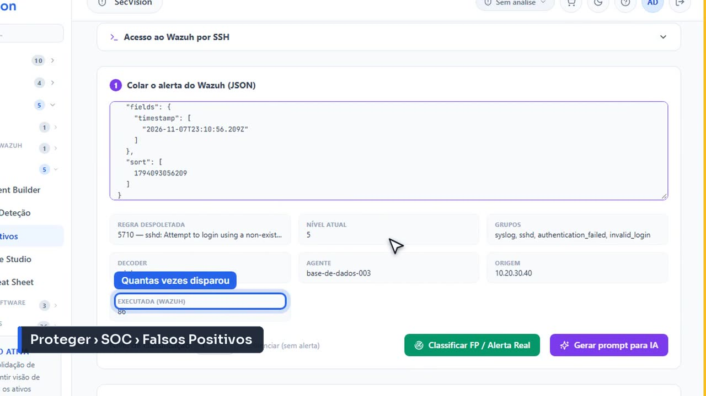
O ecrã em Proteger › SOC › Falsos Positivos.
A IA
Menu: Falsos Positivos › Gerar prompt para IA
Escrever a regra pode pedir-se a uma IA. O botão prepara o pedido com o alerta, e copia-se para o levar ao serviço de IA da organização.
E o pedido sai anonimizado: os endereços, os nomes das máquinas e das contas são trocados por etiquetas antes de saírem daqui, e repostos quando a resposta volta. Este botão mostra o que foi trocado.
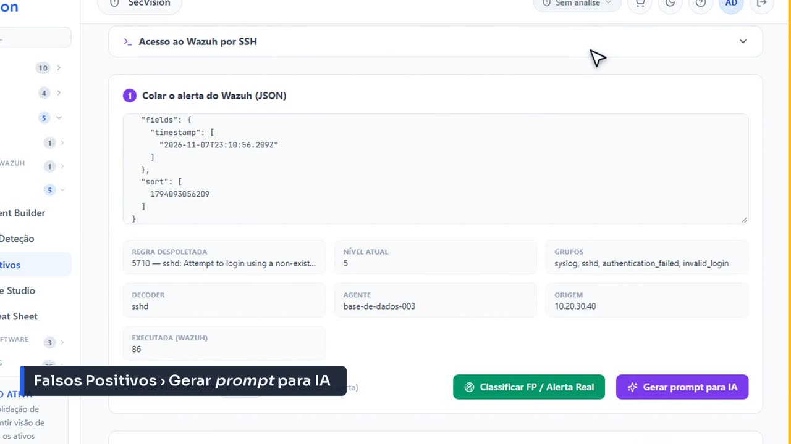
O ecrã em Falsos Positivos › Gerar prompt para IA.
No assistente de IA
Agora, fora da plataforma: o assistente de inteligência artificial. Cola-se o pedido e envia-se. O que vai: o endereço de origem é [IP_1], a máquina é [SISTEMA_1], a conta é [UTILIZADOR_1]. Mais nada sai daqui.
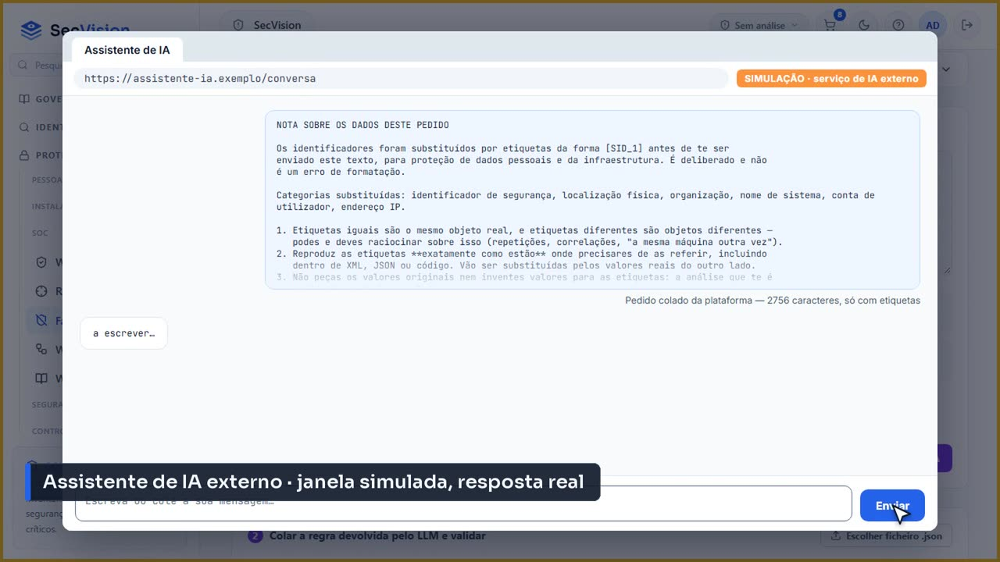
O pedido, colado no assistente de IA. A janela é desenhada para o vídeo; o pedido é o que a plataforma copiou, e foi processado de verdade por um modelo de IA.
A resposta chega: uma regra XML, filha da regra que disparou, só para aquele sistema, aquela conta e aquela origem. E com as mesmas etiquetas: o modelo nunca soube o endereço verdadeiro. Copia-se a resposta.
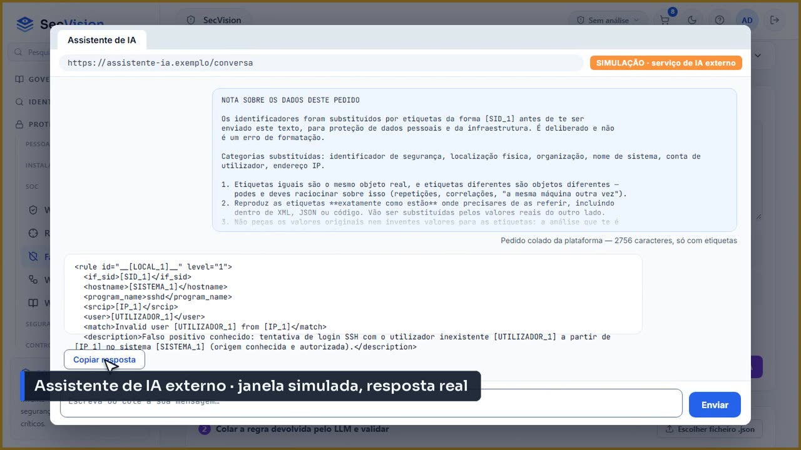
A resposta real do modelo, ainda com as etiquetas.
A regra
De volta à plataforma, a resposta cola-se na segunda caixa, ainda com as etiquetas. Validar a sintaxe faz primeiro a troca ao contrário: com o cofre do pedido, cada etiqueta volta a ser o valor real, e o ecrã diz quantas foram repostas. Só depois se verifica o XML.
É esta troca que torna a regra útil: uma regra com a etiqueta [IP_1] no lugar do endereço não corresponderia a tráfego nenhum. O número e o nível que a regra traz não importam: quem os atribui é a plataforma, ao aplicar.
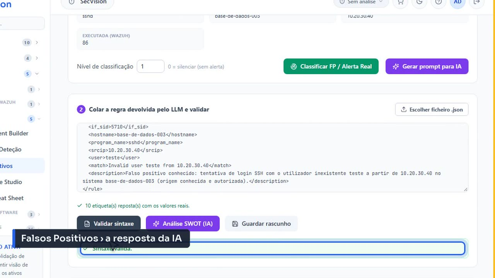
A resposta colada: «10 etiqueta(s) reposta(s) com os valores reais», e a sintaxe válida.
Aplicar
Menu: Falsos Positivos › Aplicar ao Wazuh
Testar permissões confirma, antes de mexer em nada, que as credenciais podem ler e escrever regras e reiniciar o gestor.
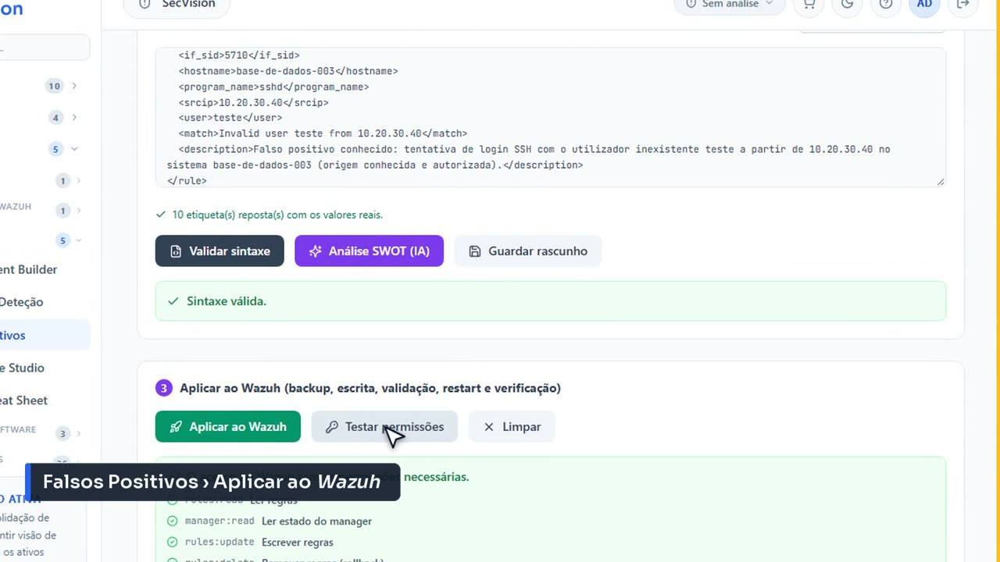
O ecrã em Falsos Positivos › Aplicar ao Wazuh.
Menu: Falsos Positivos › Aplicar ao Wazuh
Aplicar faz tudo por ordem, e cada passo aparece no ecrã: uma cópia de segurança do ficheiro de regras, a escrita da regra, a validação da configuração pelo próprio gestor, o reinício, e a confirmação de que os serviços voltaram.
Se o gestor recusar a regra, ou não voltar depois do reinício, a plataforma repõe o ficheiro como estava e diz porquê. Nunca deixa o gestor com uma regra a meio.
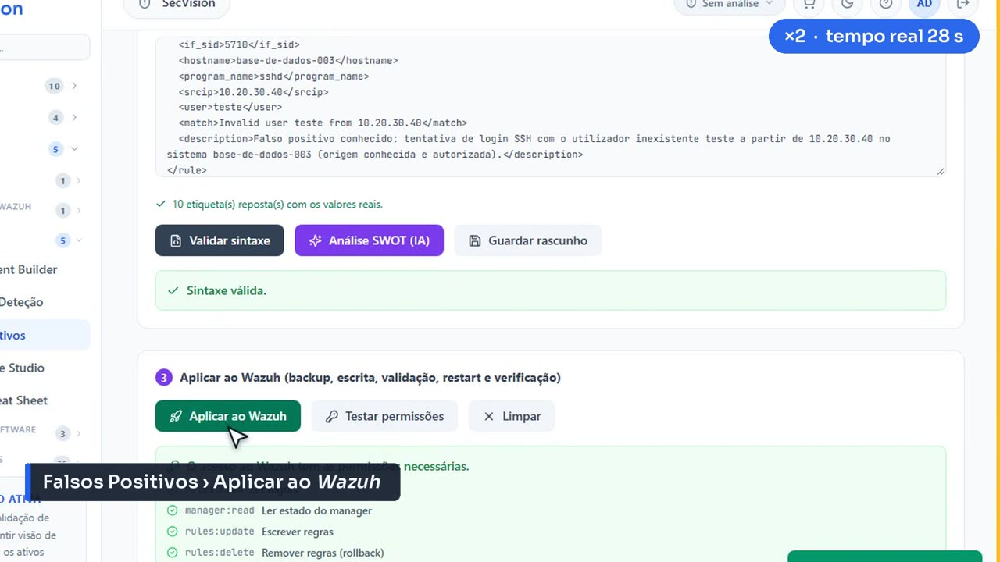
O ecrã em Falsos Positivos › Aplicar ao Wazuh.
Menu: Falsos Positivos › Aplicar ao Wazuh
No fim, o passo que mais importa: o logtest. O gestor recebe a linha do alerta original e responde que regra dispara agora. Responde a nossa, com o nível baixo: o falso positivo deixou de ser alerta.
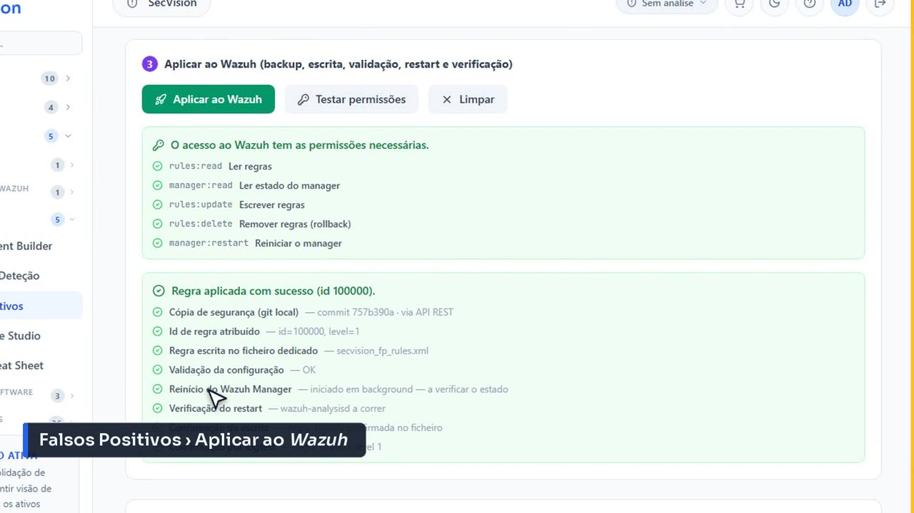
O ecrã em Falsos Positivos › Aplicar ao Wazuh.
No Wazuh
Menu: Wazuh › Server management › Rules
E do lado do Wazuh? Nas regras do gestor, filtrando as regras personalizadas, aparece o ficheiro que o SecVision gere, com a regra nova, o número que lhe foi atribuído e o nível um.
O SecVision escreve sempre no seu próprio ficheiro, e só nesse. As regras de origem do Wazuh e as regras locais da equipa ficam como estavam.
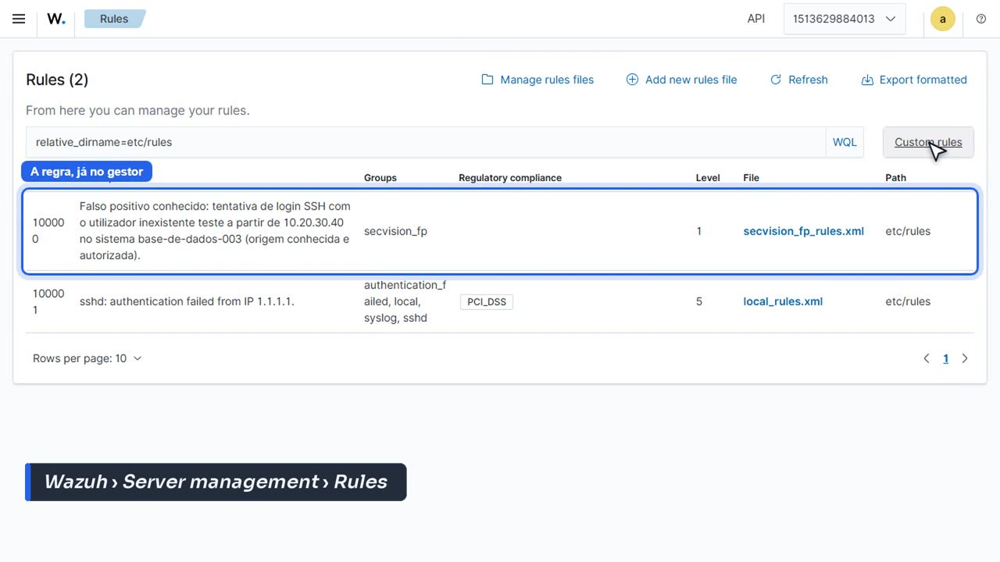
O ecrã em Wazuh › Server management › Rules.
O histórico
Menu: Falsos Positivos › Histórico
No histórico fica cada regra: quem a criou, quando foi aplicada, o número que recebeu e o estado. Daqui edita-se e volta a aplicar-se, ou remove-se do gestor.
E a contagem de disparos de cada regra aplicada mostra se ela está a apanhar o que devia. Uma regra de falso positivo que nunca dispara é uma regra a mais; uma que dispara demasiado pode estar a esconder um ataque.
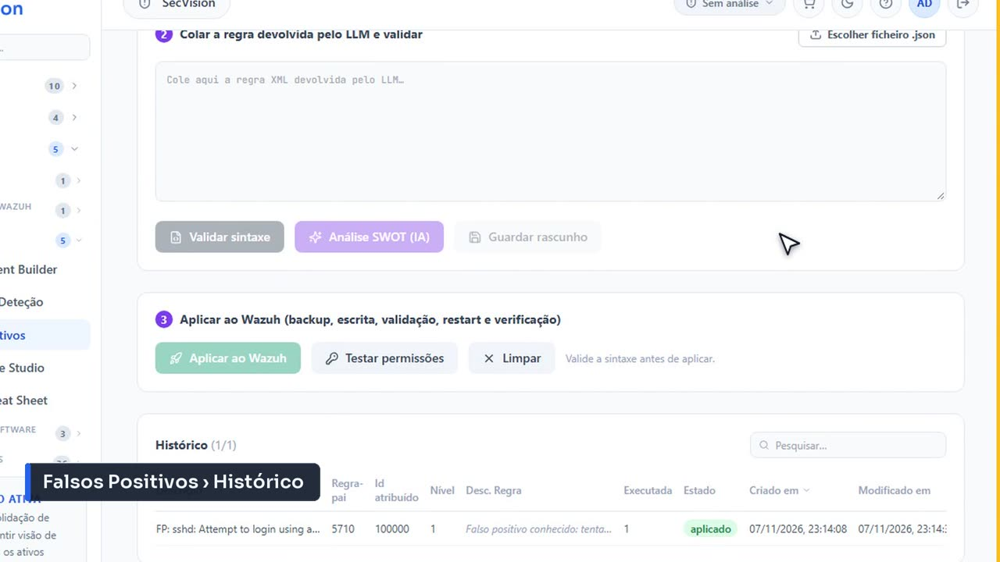
O ecrã em Falsos Positivos › Histórico.
No Wazuh
Menu: Wazuh › Threat Hunting › Events
Cinco minutos depois, a mesma pesquisa no Wazuh. A máquina continua a tentar entrar, de dois em dois minutos, mas o último alerta é de antes da regra: desde então, nenhum.
Os eventos não se perderam: estão nos arquivos, com a regra nova. Só deixaram de ser alertas, que era o que se queria.
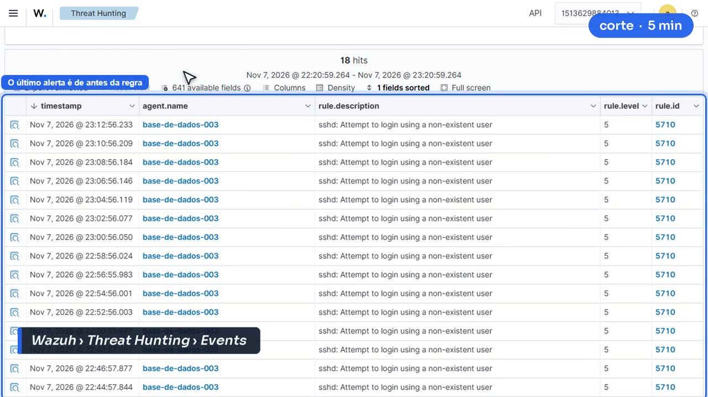
O ecrã em Wazuh › Threat Hunting › Events.
Resumo
A plataforma trata do trabalho delicado: o pedido anonimizado, a validação, a aplicação com cópia de segurança e reversão, e a confirmação pelo logtest.
O que não faz é decidir que um alerta é falso. Essa decisão é de quem analisa os alertas, aprovada por quem responde pela cibersegurança, e fica escrita no histórico.
O que a plataforma faz — e o que não faz
Lê o alerta, prepara o pedido à IA anonimizado, valida, aplica com cópia de segurança e reverte se falhar.
Confirma pelo logtest que a regra nova é a que dispara.
Não decide se um alerta é falso: isso é de quem analisa, com a aprovação de quem responde.